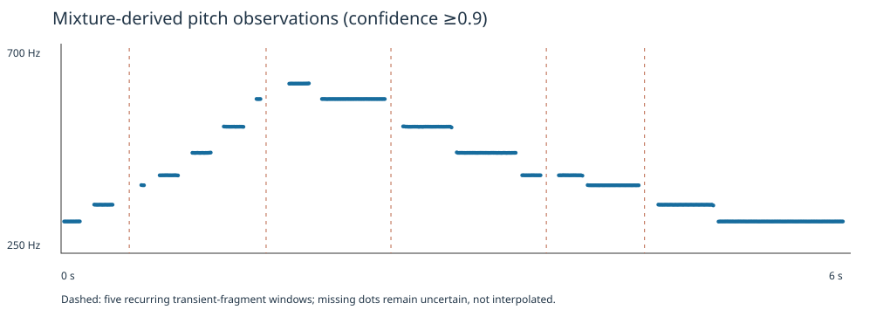

One periodic model and one recurring transient-fragment model. Periodic continuity fails during several overlaps; source purity is unverified. The unresolved residual is essential. No normalization or clipping.
Report and regression findings · Assignment map · Pitch measurements
